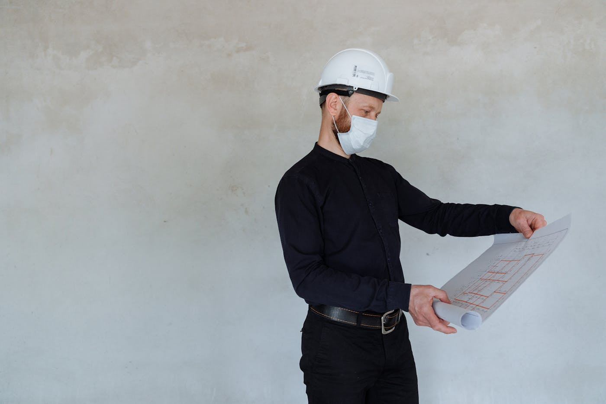
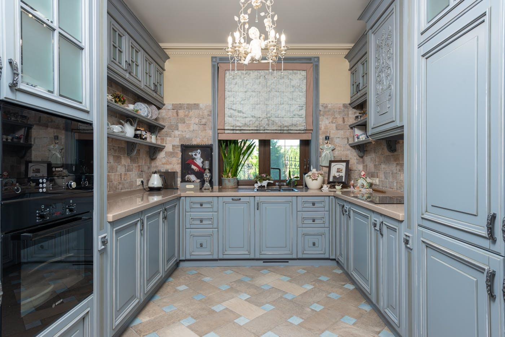
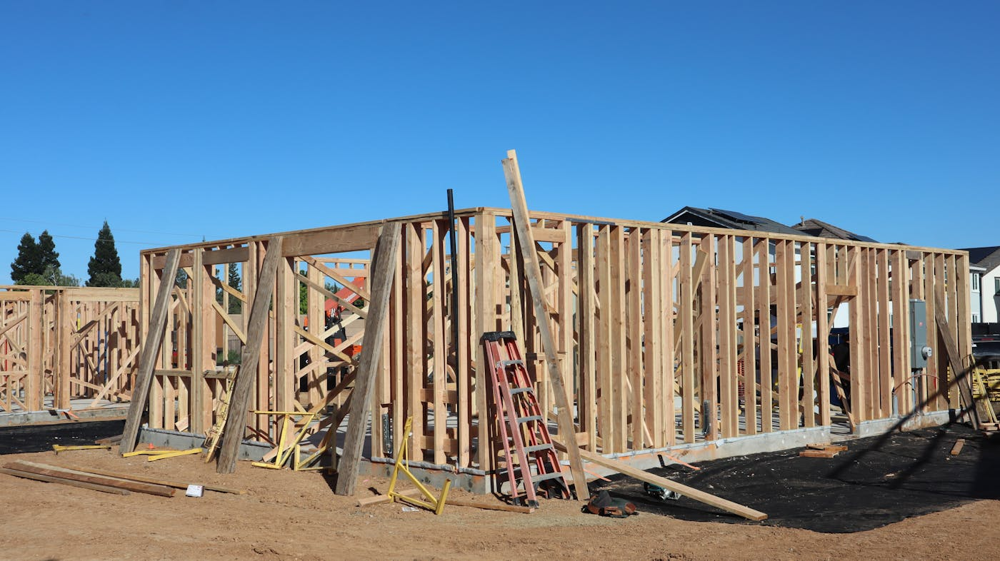

Quick answer: Custom home builders in Western Sydney operate across two very different environments: greenfield estates (Jordan Springs, Schofields, Oran Park) and established suburbs requiring knockdown rebuilds (Blacktown, Parramatta, Merrylands, Liverpool). Construction costs run $2,500–$3,200 per m² for mid-range custom and $3,200–$4,500 per m² for premium builds in 2026. Approval timelines range from 20 business days on a greenfield CDC to 8 months-plus on a DA in Camden or Campbelltown. Most knockdown-rebuilds in established Western Sydney suburbs take 18–26 months from brief to handover.
“Custom” in Western Sydney has a specific gravity problem. A word that should mean something designed from scratch for your brief and your block has been borrowed so freely by the volume building industry that it now appears in the brochures of builders offering precisely four facade options and a laminate upgrade package.
[Right. Straight face now.] This guide is about the genuine article: custom home builders in Western Sydney who start with your site, your brief, and a blank sheet. What they actually cost, how approval paths work across a region spanning six council areas, the fundamental difference between building on a greenfield lot and a knockdown-rebuild in an established suburb, and when the custom process is genuinely the wrong choice.
- What a custom builder actually does
- The two building environments in Western Sydney
- Which council covers your lot — and why it matters
- Knockdown rebuild vs renovation in established suburbs
- What a custom build costs in Western Sydney in 2026
- The realistic timeline
- When not to hire a custom builder
- Questions to ask before you sign
- FAQ
What a Custom Builder Actually Does
A genuine custom home builder manages the full process: engaging an architect or licensed building designer, coordinating structural engineers, energy consultants, and surveyors, obtaining council approvals, and delivering construction under a formal HIA or MBA contract. You get a home designed for your specific lot, your brief, and how you actually live — not a plan adjusted at the margins of a pre-approved catalogue.
The alternative is a volume or project builder: pre-designed floor plans, a fixed options list, lower cost per square metre on uncomplicated flat blocks. Project builders are legitimate businesses that deliver genuine value in the right context. The right context is a flat, rectangular, covenant-free greenfield lot with a standard brief. In that situation, paying the custom premium is paying for complexity you are not using.
For an established Western Sydney block with an irregular boundary, a slope, an easement, a north-facing garden worth protecting, or a brief that does not fit any plan in any catalogue, the volume path produces a compromised result. The distinction matters — and so does knowing which category your project falls into before you brief anyone.
The Two Building Environments in Western Sydney
Western Sydney is not one building environment. It is two, and they require different builders, different approval strategies, and different budgets. Conflating them is one of the most common and expensive planning mistakes clients make.
Greenfield estates
Suburbs like Jordan Springs, Schofields, Box Hill, Oran Park, Leppington, Marsden Park, and The Ponds offer new land releases with flat or gently undulating lots, typically 400–600m². These sites often come with developer covenants specifying facade materials, minimum floor areas, and setback requirements. Complying Development (CDC) is generally available on lots that meet the Housing SEPP criteria, giving approvals in approximately 20 business days.
Volume and semi-custom builders dominate here for good reason. The lots are straightforward, the covenants narrow the design scope, and the cost-per-m² advantage of a project home is real on a block that does not present unusual design challenges. A genuine custom builder working on a flat 450m² covenant-restricted greenfield lot adds overhead without adding commensurate value. Know this before you brief one.
Established suburbs
Blacktown, Parramatta, Merrylands, Granville, Auburn, Wentworthville, Seven Hills, Penrith, Liverpool, Campbelltown, and inner-western fringe suburbs present a fundamentally different environment. Lots here run 550–950m², housing stock is predominantly 1960s–1980s brick, and the case for knockdown-rebuild is strong where the original home is ageing past functional usefulness. These are the sites where custom builders earn their overhead.
Established suburb lots have character: irregular boundaries, sloping grades, established trees with protection orders, easements for drainage or services, and proximity to neighbouring dwellings that constrain setbacks. A custom builder experienced in Western Sydney’s established suburbs will have navigated all of these. A volume builder will ask the site to conform to the plan. These are not the same thing.
Which Council Covers Your Lot — and Why It Matters

Photo via Pexels
Western Sydney spans six major council areas, each with its own Local Environmental Plan, Development Control Plan, and DA assessment timeline. Which council covers your lot determines more about your project’s cost and timeline than almost any other single variable.
| Council | Key suburbs | Standard residential DA timeline (2026) |
|---|---|---|
| City of Parramatta | Parramatta, Wentworthville, Granville, Merrylands (partial) | 2–4 months |
| Blacktown City Council | Blacktown, Seven Hills, Quakers Hill, Schofields, The Ponds | 3–5 months |
| Cumberland Council | Auburn, Granville, Merrylands, Guildford, Berala | 3–6 months |
| City of Liverpool | Liverpool, Casula, Moorebank, Carnes Hill, Prestons | 4–8 months |
| Penrith City Council | Penrith, Glenmore Park, Jordan Springs, St Clair | 3–6 months |
| Campbelltown / Camden | Campbelltown, Oran Park, Leppington, Narellan | 6–12 months |
The Campbelltown and Camden councils carry the longest residential DA timelines in the region — a product of significant development pressure from the South West Growth Area combined with assessment resources that have not scaled proportionally. If your site is in this corridor and you intend to lodge a DA, build an extra 3–6 months into your programme as a real buffer, not an optimistic one.
Confirm your property’s LGA on the NSW Planning Portal before you brief a designer. Suburb names do not always align with council boundaries — the western edge of Merrylands falls under Cumberland while the eastern portion sits in Parramatta, with meaningfully different DA timelines two streets apart. This is worth two minutes of your time before it costs you six months.
For how Parramatta’s DA process compares to the Hills Shire and Hornsby, see our breakdown in the custom home builder Carlingford guide, which covers the three-council split that affects that suburb in detail.
Knockdown Rebuild vs Renovation in Established Suburbs
Most custom home activity in established Western Sydney is knockdown-rebuild territory. The question of whether to knock down or renovate comes up early and deserves a direct answer rather than a corporate hedge.
When knockdown rebuild makes more sense:
The original home was built before 1990 and likely contains asbestos in fibrous cement sheeting, eave linings, or wet area walls. Licensed asbestos removal adds $10,000–$35,000 to any renovation scope and disrupts the build sequence. On a Blacktown or Parramatta brick veneer of this era, assume it is present until a licensed assessor confirms otherwise.
The floor plan is fundamentally wrong for the brief — typically an original layout with separate, small rooms, inadequate natural light to living areas, and no connection to outdoor space. Renovating to a fundamentally different layout requires moving load-bearing walls, relocating wet areas, and often opening the roof. At that scope, you approach rebuild cost without achieving the result of a ground-up design.
The structure has been extended without complying approval. This is more common in Western Sydney’s established suburbs than in newer areas. Certifying new work on top of unapproved existing work requires retrospective assessment, which is slow and expensive and sometimes impossible to satisfy.
When renovation makes more sense:
The existing structure is in good order — asbestos-free, structurally sound, with good bones — and the brief is confined to a rear extension, kitchen and bathroom upgrades, or a first-floor addition. A well-executed rear extension on a sound Western Sydney home can be completed for $200,000–$450,000 depending on scope, which is substantially less than a full knockdown-rebuild.
The block has a heritage listing or sits within a heritage conservation area, making demolition either restricted or requiring a heritage-assessed DA. Cumberland and Liverpool councils both have heritage conservation areas in older sections. Check before assuming.
What a Custom Build Costs in Western Sydney in 2026

Photo via Pexels
Western Sydney sits at a lower price point than Sydney’s North Shore or Eastern Suburbs, but the cost tiers are wider and more variable because the range of site conditions and brief types is broader.
| Specification | Cost per m² (construction only) |
|---|---|
| Project / volume builder | $1,800 – $2,200 |
| Mid-range custom | $2,500 – $3,200 |
| Premium custom | $3,200 – $4,500 |
| Architectural / high-spec | $4,500+ |
A 280m² mid-range custom home runs $700,000–$896,000 to construct before anything else is added.
What gets added:
- Demolition and site clearing: $15,000–$40,000
- Asbestos removal (if applicable): $10,000–$35,000
- Architect or building designer fees: $50,000–$100,000
- Structural engineering, energy assessments, surveys: $12,000–$22,000
- Council contributions (Section 7.11 — varies significantly by LGA): $15,000–$45,000
- Landscaping, driveway, fencing: $30,000–$80,000
- Land in established Western Sydney (600–800m²): $600,000–$1,200,000+
A typical Western Sydney knockdown-rebuild on a well-located established block — land included — comes in at $1.5M–$2.5M for a well-specified result. In growth corridor suburbs where land is still under $600,000, the total narrows. In premium western suburbs like Baulkham Hills or Kellyville fringe, it widens. That figure surprises people who started with a construction-only rate on a napkin. It should not surprise you.
Section 7.11 council contributions deserve specific mention. These contributions — levied by councils to fund local infrastructure — vary materially across Western Sydney LGAs and are often overlooked in early budget estimates. For a new dwelling in Campbelltown or Camden, Section 7.11 contributions can reach $40,000–$60,000. Your builder or town planner should calculate this before design begins, not after the DA is lodged. For how this compares to North Shore council contributions, see our North Shore custom builders guide.
The Realistic Timeline

Photo via Pexels
| Phase | Greenfield / CDC | Established suburb / DA |
|---|---|---|
| Site assessment and feasibility | 2–4 weeks | 3–5 weeks |
| Design and documentation | 2–4 months | 3–5 months |
| Approval (CDC or DA) | 20 business days | 3–12 months |
| Construction — single storey | 8–12 months | 8–12 months |
| Construction — double storey | 12–16 months | 12–16 months |
On a greenfield lot with CDC approval, a custom home from first brief to handover runs 12–20 months. On an established suburb block with a DA — and particularly in Liverpool, Campbelltown, or Camden where DA timelines run long — the realistic total is 20–28 months. Budget for the longer end.
DA timelines in Western Sydney have extended over the past three years as population growth has outpaced assessment resourcing in high-growth LGAs. A builder who quotes you a 14-month total project timeline on a DA site in Camden or Liverpool is either not accounting for DA risk or is not familiar with current assessment timelines in those councils. Ask them to explain their DA assumption in writing before you sign.
For a detailed breakdown of how DA timelines work and what drives them, our guide to architectural home builders in Sydney’s Eastern Suburbs covers the planning framework and typical assessment factors in depth.
When Not to Hire a Custom Builder
This section is the one most guides skip. We are not most guides.
Do not engage a custom builder if you are building on a flat, covenant-restricted greenfield estate lot with a standard four-bedroom brief. The design constraints imposed by the developer covenant, the simplicity of the site, and the standard nature of the brief mean the volume builder path delivers a comparable product at a materially lower price. The custom premium is not justified by the complexity — because there is no complexity.
Do not engage a custom builder if your construction budget is under $600,000. The overhead structure that supports a genuine custom process — dedicated project management, architect coordination, procurement, and quality control — requires a minimum project scale. Below $600,000, that overhead compresses to the point where the builder is funding it out of margin. Something gives. It is usually not the overhead.
Do not engage a custom builder if you need to be in the house within 14 months and your site requires a DA in Liverpool, Campbelltown, or Camden. DA timelines in those councils are currently 6–12 months for residential applications. The design phase, construction certificate, and construction itself all come after that. The arithmetic does not work, and no builder can make it work by wanting to.
Do not engage a custom builder if you are unwilling to commit regular time to design decisions across a 3–5 month documentation process. Custom builds are not a transaction where you hand over a brief and collect a house. They are a collaboration. If your schedule cannot accommodate monthly design workshops and selection sign-offs, the programme stalls and the cost of that stalling lands on your next progress claim.
Questions to Ask Before You Sign
Do this before the first phone call, not after three good meetings and an emotional attachment to the renders.
- Are you licensed for residential construction in NSW? Verify the licence number on the NSW Fair Trading contractor licence register. The licence should be current, cover the relevant class, and be held by the legal entity signing your contract — not an individual who left the business last year.
- Do you have current home building compensation insurance for this project value? NSW requires HBC cover for residential contracts over $20,000. Ask for evidence before contracts are signed. A builder who cannot produce it is providing information.
- Have you completed projects in this specific council area in the last two years? DA experience in Blacktown does not transfer directly to Campbelltown. Ask for references in the same LGA as your site, then call them.
- Who will be my primary contact during construction — and can I meet them before we sign? The person who sells you the project and the person who runs your site are often not the same. Know which one you are getting before you commit.
- What is your current project capacity and realistic start date? A builder with immediate availability in a hot market has a reason for that. A builder with a six-month pipeline usually does too. Ask, then verify by calling their current clients.
- How do you handle variations and what does the variation clause say? Every custom build has variations. The question is who authorises them and on what terms. Variations should be priced and signed off in writing before work proceeds. Read the clause before you sign the contract.
Six questions. Not unreasonable for a commitment between $1.5M and $2.5M. For a broader builder vetting framework — including what to look for in references and how to read a contract — see our guide to custom home builders on the Northern Beaches.
FAQ
How much does it cost to build a custom home in Western Sydney in 2026?
A mid-range custom home in Western Sydney costs $2,500–$3,200 per m² for construction in 2026. A premium custom build runs $3,200–$4,500 per m². A 280m² well-specified home costs $700,000–$896,000 to construct. All-in on a typical Western Sydney knockdown-rebuild — including land, design fees, demolition, asbestos removal, council contributions, and landscaping — the total sits between $1.5M and $2.5M depending on suburb and specification.
What is the difference between a custom home and a project home in Western Sydney?
A project home comes from a catalogue of pre-designed floor plans that can be modified within a fixed options list. A custom home is designed from scratch for your specific block, your brief, and your constraints — nothing in the design predates your project. In Western Sydney, project homes dominate new greenfield estates where flat, covenant-restricted lots suit a catalogue approach. Custom builders deliver better value on established suburb blocks where the site, brief, or planning context requires a response that no catalogue can provide.
How long does it take to build a custom home in Western Sydney?
On a greenfield lot with Complying Development (CDC) approval, expect 12–20 months from brief to handover. On an established suburb block requiring a Development Application, add 3–12 months for DA assessment depending on the council. Campbelltown and Camden councils currently run 6–12 months for residential DAs. Most knockdown-rebuilds in established Western Sydney suburbs take 18–26 months from brief to handover.
Do I need a DA or a CDC for a new custom home in Western Sydney?
Whether you need a Development Application (DA) or a Complying Development Certificate (CDC) depends on your specific lot and design. Greenfield estate lots with a compliant design typically qualify for CDC — approval in approximately 20 business days from a private certifier. Established suburb lots — irregular shapes, corner sites, or designs departing from setback and height standards — usually require a DA assessed by the relevant council. Confirm your site’s approval path on the NSW Planning Portal or through your builder or architect in the first meeting.
Is a knockdown rebuild worth it in Western Sydney?
On an established Western Sydney block with a 1960s–1980s home, a knockdown rebuild typically outperforms renovation when the original home contains asbestos, the floor plan is fundamentally wrong for the brief, or renovation scope exceeds 60% of replacement cost. Land values in well-located Western Sydney suburbs — Parramatta, Blacktown, Merrylands — have appreciated significantly, making a purpose-built home on an existing lot a strong investment in most cases.
Which suburbs does Western Sydney cover for custom home building?
Western Sydney’s custom home building market spans Parramatta, Blacktown, Penrith, Liverpool, Campbelltown, Camden, Cumberland (Auburn, Granville, Merrylands), The Hills Shire fringe, and the South West Growth Area including Schofields, Jordan Springs, Oran Park, Leppington, and Box Hill. Each area sits under a different council with different DA timelines, planning controls, and Section 7.11 contribution schedules.
How do I check if a builder is licensed in NSW?
Search the NSW Fair Trading contractor licence register using the builder’s trading or business name. Confirm the licence is current, covers the relevant class (typically “contractor licence — builder”), and is held by the legal entity that will sign your contract. Also search the NCAT Decisions database for any domestic building disputes — a pattern of appearances is more telling than any single one.